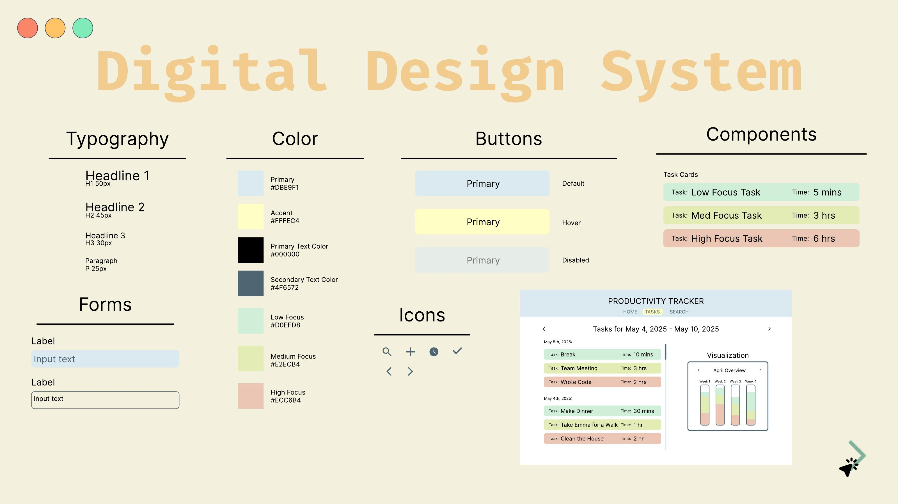
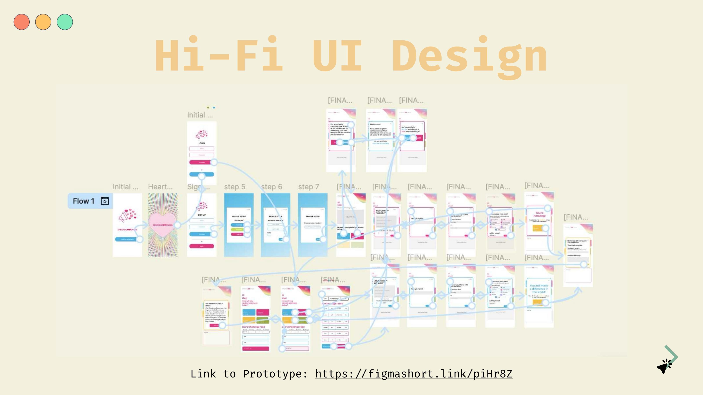
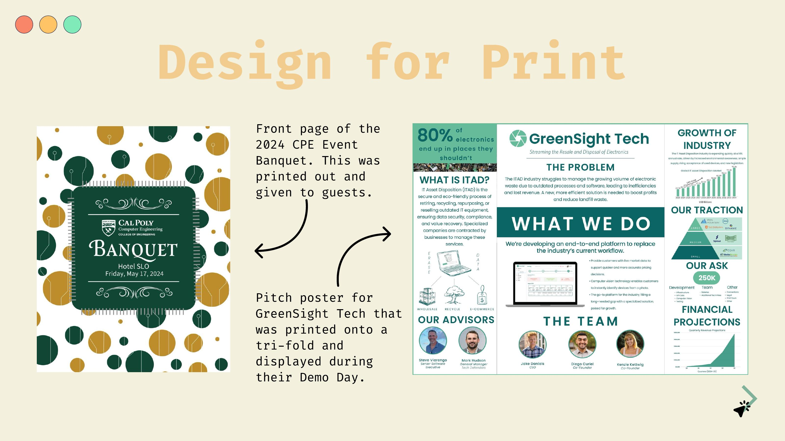

Focus
Built a cohesive visual system for a productivity tool, including component states and interface patterns.
Digital design system
Typography, color, components, buttons, icons, and form states for a focused productivity tracking experience.

Built a cohesive visual system for a productivity tool, including component states and interface patterns.
Defined the interface language, organized component examples, and created the final presentation screens.
Figma, design systems, UI components, typography, and color.

